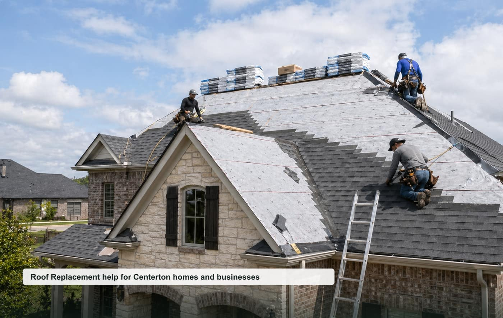

Roof Replacement
Asphalt shingle replacement, tear-offs, ventilation, and estimates.
View pageroofing contractors Centerton AR
A focused local quote request website for Centerton, Benton County, and nearby communities.

Opportunity thesis
Fast-growing suburb with high-ticket roof replacement and storm-damage demand; city-specific site may compete below NWA regional brands.
The site is built around specific high-intent pages instead of one generic homepage. That makes it easier to test rankings, route leads by job type, and pitch a local business with clear ROI.
Service cluster
Asphalt shingle replacement, tear-offs, ventilation, and estimates.
View pageLeaks, missing shingles, flashing, vents, and storm damage.
View pageHail, wind, insurance documentation, and emergency tarping.
View pageStanding seam, exposed fastener, upgrades, and rural properties.
View pagePre-sale checks, leak tracing, and condition reports.
View pageGutter replacement, downspouts, drainage, and roof edge protection.
View pageBuyer-intent pages
Homeowner-focused roof replacement quote requests for inspections, repairs, replacements, and planned projects in Centerton.
View pageSmall business, property manager, and light commercial roof replacement requests around Centerton and Benton County.
View pageUrgent roof replacement requests where response time, safety, access, and callback speed matter.
View pageLocal search page for nearby roof replacement requests in Centerton, Benton County, and surrounding communities.
View pageThese pages support nearby searches without claiming fake office locations.
Repeatable model
Start with tracked calls/forms, validate ranking movement, then offer a trial to the best local provider. Keep the lead flow exclusive once paid.
Planning guides
Local questions
Cost depends on project size, urgency, access, materials, labor, and the final scope confirmed by the provider.
Response depends on provider availability, weather, job type, and whether the request is emergency or planned work.
Nearby requests may be routed for Bentonville, Highfill, Cave Springs and surrounding Benton County communities.
Include your city, project type, rough size, visible symptoms, timeline, and the best callback number.
Request a local quote
Include the project type, rough size, city, urgency, and best callback number.